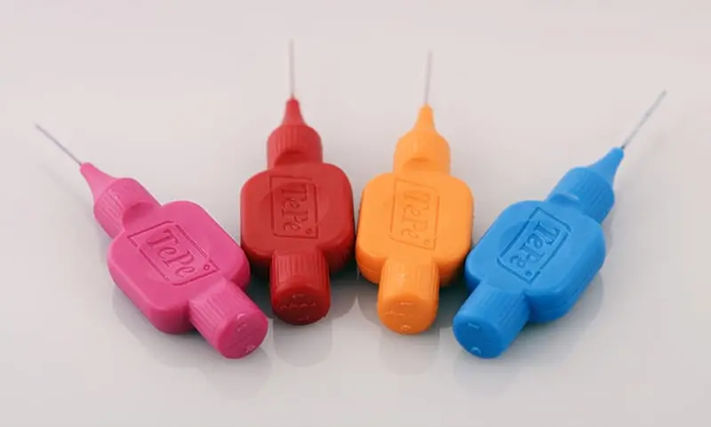
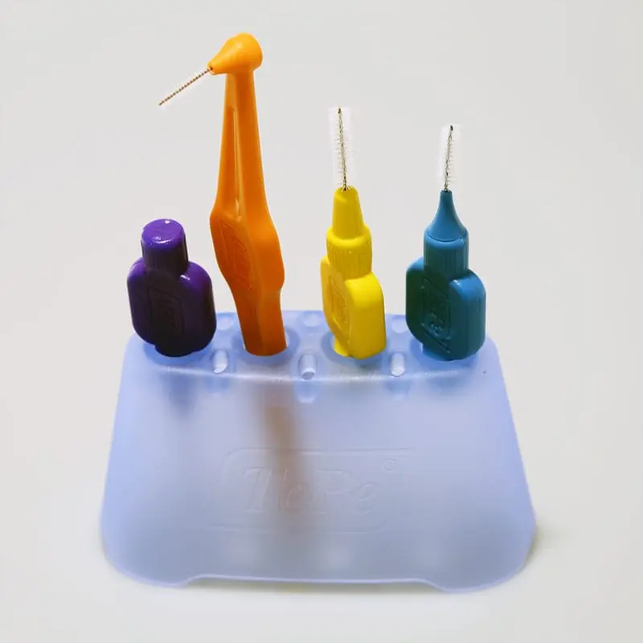
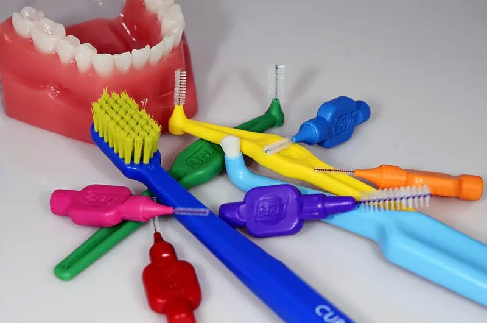
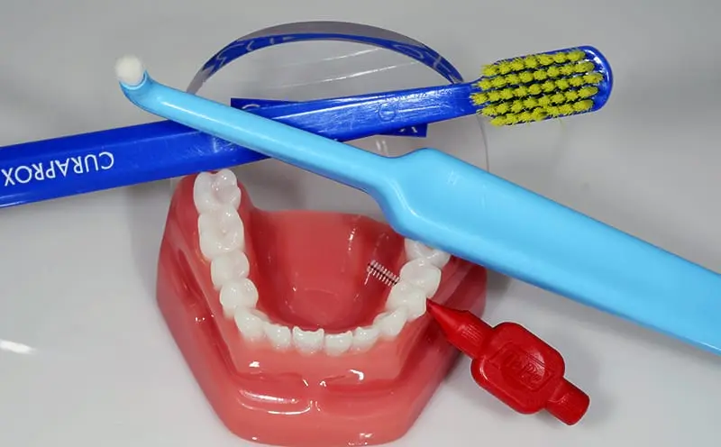
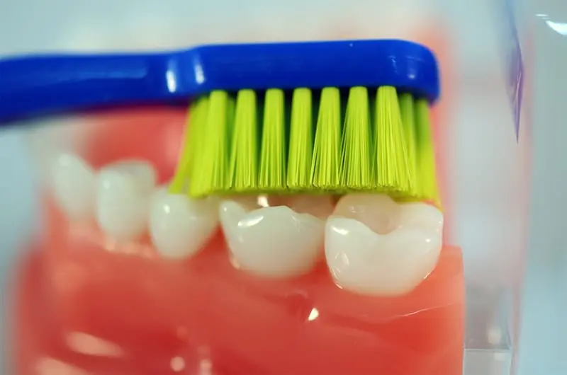
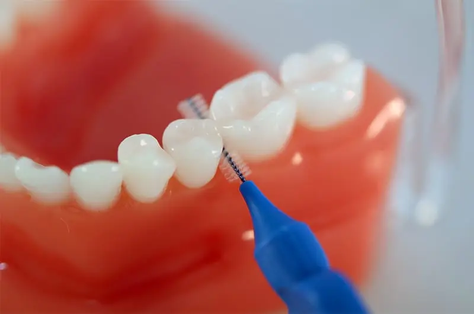
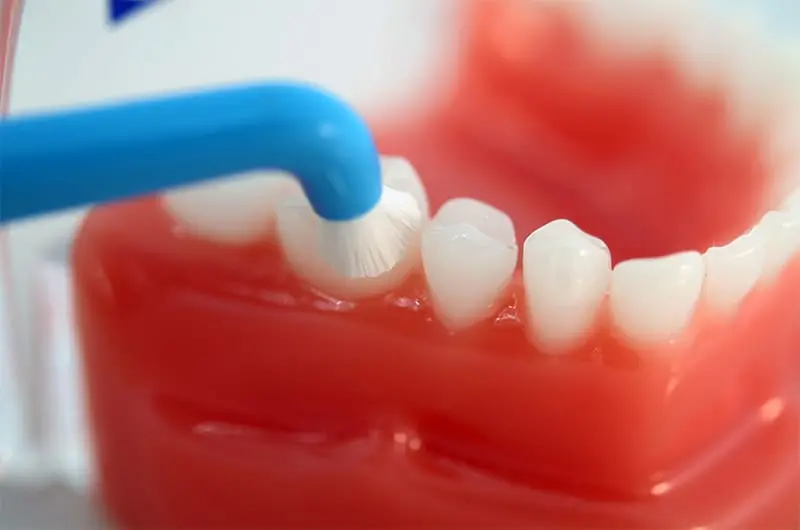
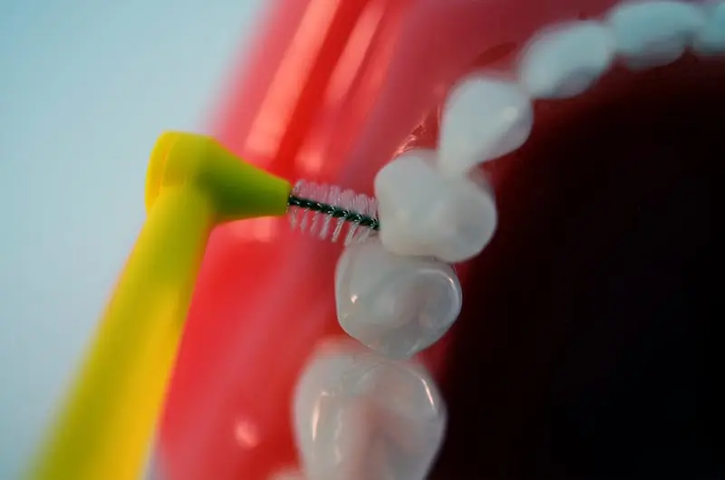

Pokud si nejste s jejich výběrem jistí, pomůže vám váš zubní lékař nebo dentální hygienistka. Cílem dentální hygieny je efektivní odstranění bakteriálního povlaku, čímž přispějete ke snížení rizika zánětu dásní a parodontózy.
Častá otázka našich pacientu zní: “Jak dlouho bychom si měli čistit zuby?” Na tuto otázku však nelze odpovědět přesným časovým údajem. Jde totiž o velice individuální záležitost, záleží na tom, JAK si zuby čistíte. Hygiena dutiny ústní by se měla provádět tak dlouho, dokud nejsou všechny zuby, mezizubní prostory a povrch jazyka dokonalé čisté, zbavené nečistot (plak, zbytky jídla). Co se četnosti týče, je potřeba ústní dutiny čistit minimálně dvakrát denně (ráno před snídaní a večer těsně před spaním).
Přemýšlejte: Není lepší teď investovat pár stovek do kvalitních zubních kartáčků a dalších dentálních pomůcek, než později utratit tisíce za následky zubních kazů či parodontózy (výplně, implantáty, protetické náhrady)?
Zubní kartáček
Jak by měl vypadat ideální zubní kartáček? Malá hlavička, měkká rovně střižená vlákna. Se správnou technikou čištění vám poradí vaše dentální hygienistka. Neexistuje totiž pouze jedna jediná, každý chrup potřebuje individuální péči a hygienistka pro vás vybere tu nejvhodnější.
Mezizubní kartáčky
Čištění mezizubních prostor je stejně důležité, jako čištění zubů klasickým kartáčkem. Plak a zbytky jídla si totiž vždycky najdou skulinky, kudy se mezi jednotlivé zuby dostat. A klasický kartáček zde nezmůže nic. Přeci nechcete riskovat vznik mezizubních kazů, zánět dásní, parodontózu či zápach z úst. S výběrem správné velikosti mezizubních kartáčků a jejich správným použitím vám opět pomůže vaše dentální hygienistka.
Vždy po ukončení protetického ošetření, během a po ortodontické léčbě a po jakékoli změně je třeba mezizubní kartáčky překalibrovat. Vlivem přirozených posunů zubů i čelistí toto doporučujeme i tak minimálně 1x ročně.








Mezizubní nit
Ani mezizubní kartáček není všemocný, a proto existuje mezizubní nit. Jedná se především o místa, kde na sebe zuby těsně naléhají. I zde se usazují zbytky jídla a plak, které mohou následně způsobit vznik mezizubních kazů. Nevýhoda mezizubních kazů je, že jdou jen velmi těžko odhalit pouhým pohledem, takže než se na ně přijde, mohou se rozšiřovat hlouběji do zubu. V tu chvíli hrozí poškození dřeňové dutiny zubu.
Solo kartáček
Jinak také jednosvazkový kartáček – dokáže vyčistit i špatně přístupná místa (zadní zuby, vnitřní plošky zubů, prořezávající se zuby, krčkové oblasti atd.
Škrabka na jazyk
I čištění jazyka patří mezi základní úkony dentální hygieny. Plak se totiž nevytváří pouze na zubech, ale i na povrchu jazyka. K jeho odstranění slouží speciální škrabka na jazyk. Použití je jednoduché, tvar škrabky je přizpůsoben jazyku a nevyvolává dávivý reflex. Stačí dvakrát až třikrát přejet škrabkou od kořene jazyka po špičku a je po bakteriích, které způsobují nepříjemný zápach z úst.
Výživa a zuby
Vznik zubních kazů je podmíněn mnoha různými faktory. Některé z nich ovlivnit nemůžeme, jiné ovšem ano. Máme na mysli složení jídelníčku a vaše stravovací návyky. Jak už víte, zubní kaz vzniká v důsledku nedokonalého očišťování zubního plaku. Bakterie, které se v plaku nachází, přeměňují cukr z potravy na agresivní kyseliny, jež narušují zubní sklovinu. Čím častěji a déle jíte, tím více času mají bakterie na poškozování zubní skloviny. Z toho důvodu je vhodné si po každém jídle vypláchnout ústa alespoň čistou vodou. Tím se kyseliny a prostor ústní dutiny neutralizují.
Chcete-li snížit riziko vzniku zubních kazů, omezte konzumaci sladkostí, které obsahují sacharidy, nebo je nahraďte za dobroty s přírodními sladidly (např. se stévií). Velkým pomocníkem proti zubním kazům je fluorid, který posiluje zubní sklovinu. Fluorid se nachází v určitých zubních pastách, mořských plodech a rybách, v pravém zeleném čaji a některých kuchyňských solích. Fluoridy nenahrazují mechanické čištění!